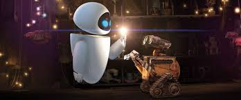

WALL-E, a robot who has developed sentience, is the only robot of his kind shown to be still functioning on Earth. He is a small mobile compactor box with all-terrain treads, three-fingered shovel hands, binocular eyes, and retractable solar cells for power. Although working diligently to fulfill his directive to clean up the garbage (all the while accompanied by his cockroach friend Hal and music playing from his on-board recorder) he is distracted by his curiosity, collecting trinkets of interest. He stores and displays these "treasures" such as a birdcage full of rubber ducks, a Rubik's Cube, Zippos, disposable cups filled with plastic cutlery and a golden trophy at his home where he examines and categorizes his finds while watching a video cassette of Hello, Dolly! via an iPod viewed through a large Fresnel lens.

He has become very lonely, having nobody but Hal as company, and is beginning to wonder whether there is more to life than his directive. So when he meets EVE, he quickly falls in love with her. WALL•E is very protective of EVE. When she shuts down after getting the plant, WALL•E places her on top of his transport (thinking she is charged by solar energy just as he is) and protects her from the weather waiting for her to "recharge". At the repair center, he mistakes that the equipment there as trying to hurt her and rushes to her aid.